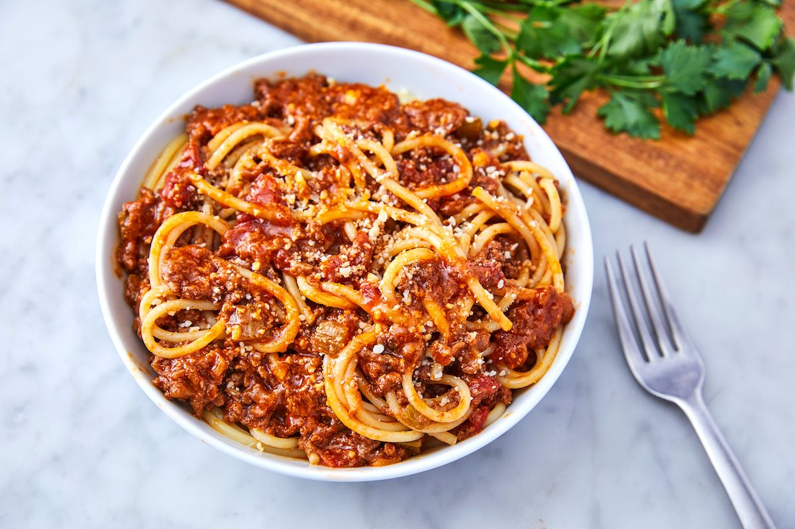

Cauliflower Bolognese

Description
This is the first of several easy, make-ahead slow cooker recipes I tried from a infographic found on Reddit. Credit goes to the creators, but deviations from that guide are my own.
This recipe is almost too easy. As in, it suffers from a case of "well if that's really it, I guess that's it." There are simple things you can do to amplify this sauce and make it really something. If you follow the guide to a T, you'll end up with a watery disappointment. On the first attempt, I neglected to smash the cauliflower to pieces and ended up with soggy vegeables over noodles.
No good.
Play around with it, and you'll have an extremely satisfying vegetarian pasta night. This one rewards improvisation.
Ingredients
- Oregano
- Basil
- Diced tomatoes
- Vegetable stock
- Garlic
- Red onion
- Salt
- Pepper
- Cauliflower
- Red pepper flakes
- Noodles
- Parmesean cheese
Steps
- Measure out your dry ingredients.To a freezer bag, add 2 tsp. of oregano; chiffonade and add 1 tsp. of basil to the bag (reserve a few whole leaves for garnish); add a good helping of salt, pepper, and red pepper flakes to taste (at least 1 tsp. of each).
- Add a 28 oz. can of diced tomatoes to the freezer bag. If preferred, small dice at least 4 fresh tomatoes, and add a small can (about 4-6 oz.) of tomato sauce to the bag.
- Mince 2 cloves of garlic.Add the garlic, at least 1 tsp., more to taste, to the freezer bag.
- Dice a medium red onion, enough to generate ¾ cup.
- Cube 1 head of cauliflowerinto bite-sized chunks. Place into the freezer bag.
- Add ½ cup of vegetable stock to the bag. Toss the bag to mix the ingredients well. Either dump the contents right into the slow cookder and cook on high for 3 ½ hours, or store in the freezer with the bag upright until you're ready to cook.
- Near the end of its cooking time, prep your choice of noodles. The recipe source included zucchini noodles as an option, but I think this works better with a thick angel hair pasta.
- While the noodles cook, smash up the cauliflower to break up the florets.
- Drain the noodles, return to the pot, and add your bolognese right to the noodles. At this stage, you can either serve as is or add a thickening agent while the sauce cooks down a bit further. Top with freshly grated parmesean cheese, garnish with a few whole leaves of basil--however you like it, enjoy!